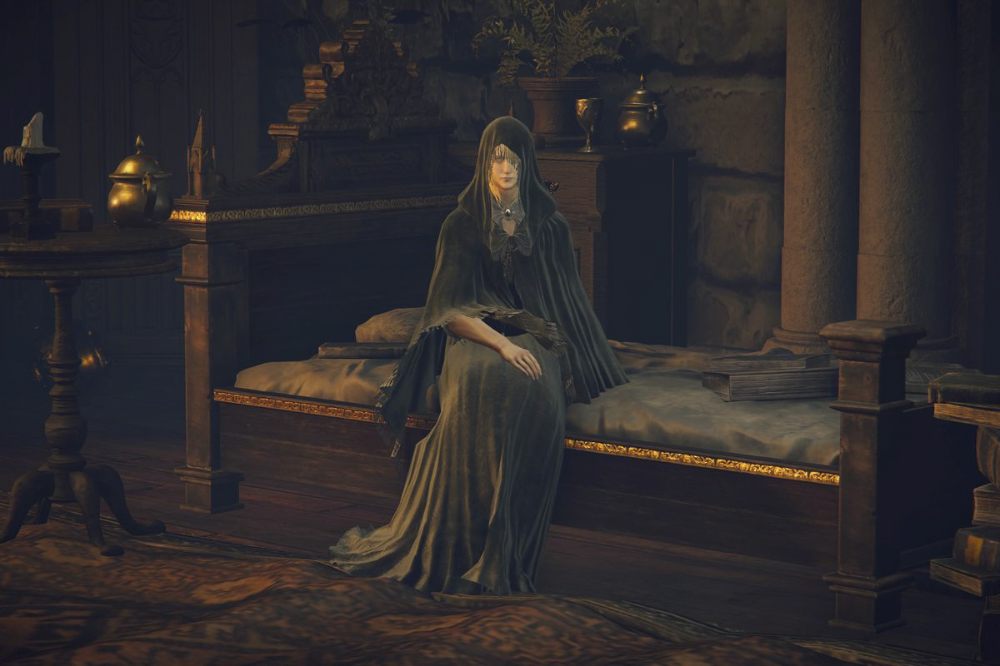
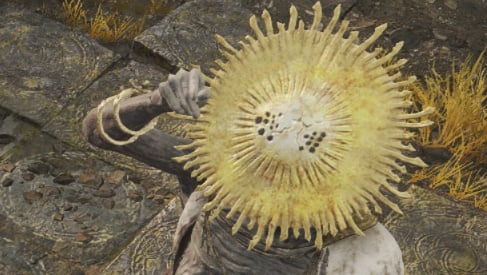

En las Tierras Intermedias hay diversos personajes con sus historias e intenciones.
Estos son algunos de ellos.
Melina:
Es una misteriosa joven que nos ayuda en diferentes a través de la historia. Se ofrece para servirnos
como "Doncella" y guiarnos hasta llegar al Árbol
Áureo y convertirnos en el Señor de Elden.
Alexander Puño de Hierro:
Un jarrón viviente que desea convertirse en un valiente guerrero y al que nos encontramos varias veces
en la historia.
Renna/Ranni La Bruja:
Un personaje misterioso que afirma ser una bruja que ha robado la muerte. Se presenta con un nombre,
pero luego nos da el verdadero y podemos ser reclutados
para ayudarla.
Fia:
Es una mujer que se presenta como compañera de lecho de muerte. Su historia la deja ver como una
servidora de un dios de la Muerte.

Reina Marika:
Es la gobernante actual de las Tierras Intermedias y la que fragmento el Anillo de Elden. Tiene
poderosos semidioses como hijos.
Gideon Ofnir, el Omnisciente:
Es el dirigente de la Mesa de la Gracia Perdida. Al querer también convertirse en Señor de Elden, se le
puede encontrar rodeado de libros tratando
de adquirir información.
Blaidd:
Es un semi-lobo que sirve a Ranni la Bruja. Sigue diferentes misiones para ayudarla a conseguir su
objetivo.
Millicent:
Es una misteriosa joven que se ve afectada por un caso incurable de Podredumbre Escarlata. Al ayudarla
podremos encontrarla en diversos momentos de su
travesía.
Noble Mascara de Oro:
Es un misterioso personaje que aparenta estar en un estado de meditación permanente. Se dice que tiene
conocimientos profundos sobre el mundo.

Dos Dedos:
Entidades que parecen ser enviados de la Gran Voluntad. Se sabe que buscan guiar al protagonista hacia
algún lado, pero poco más.
Tres Dedos:
Entidades similares a los Dos Dedos pero con propósitos diferentes, enfocados hacia las Flamas de la
Locura.
Hecho por Andres Leonardo Escobar Pinzon - 2022